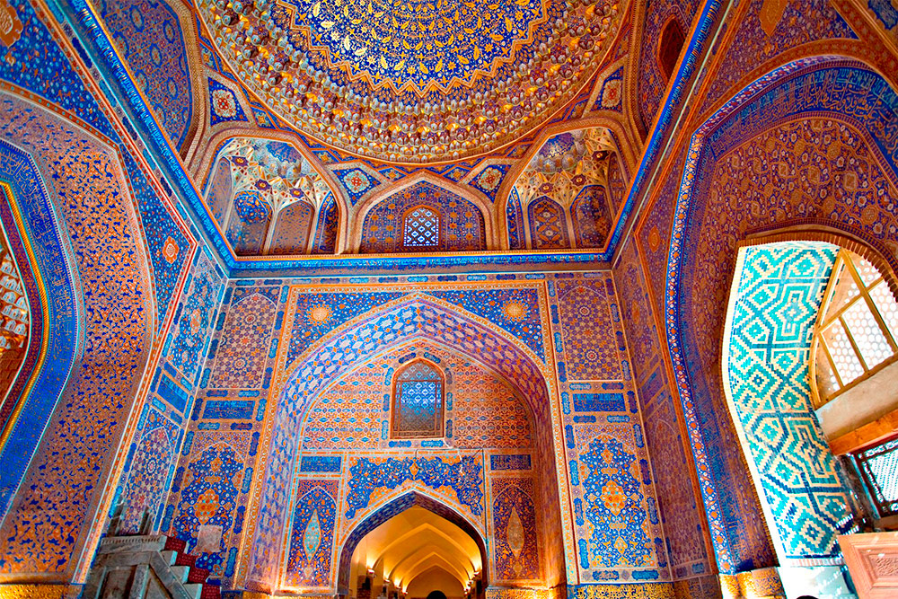
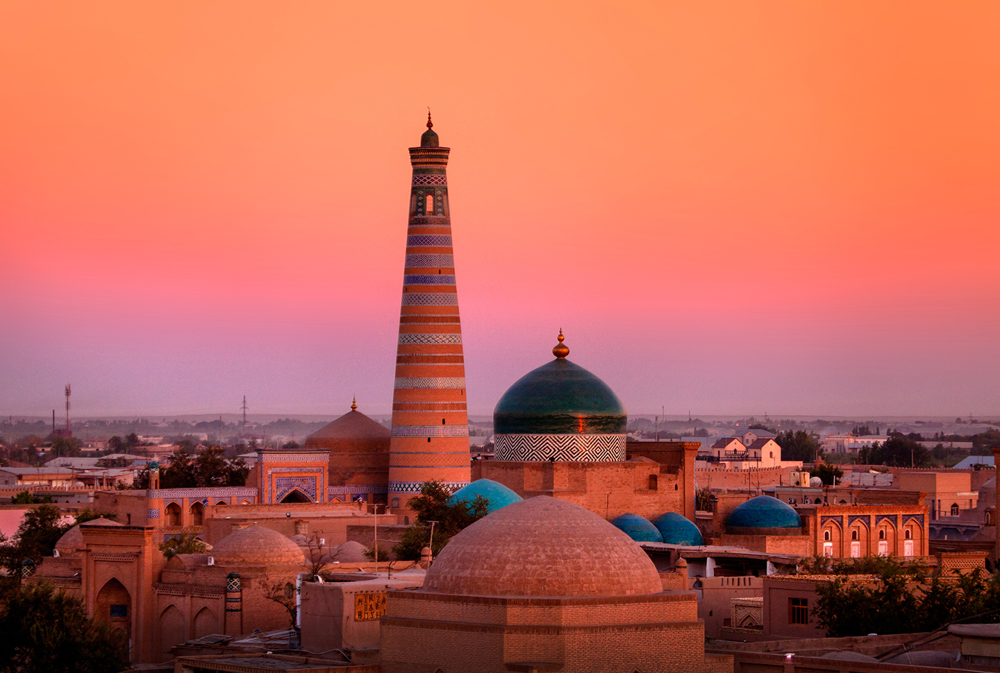
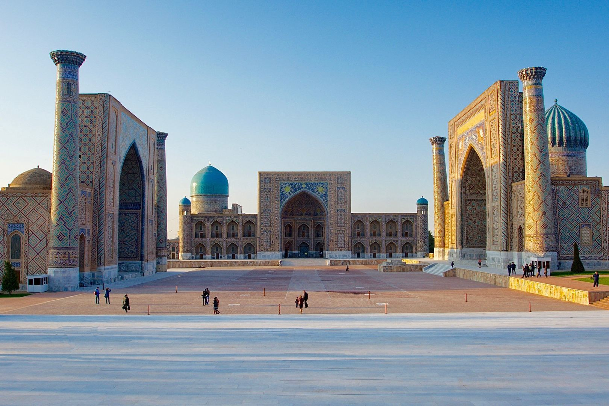
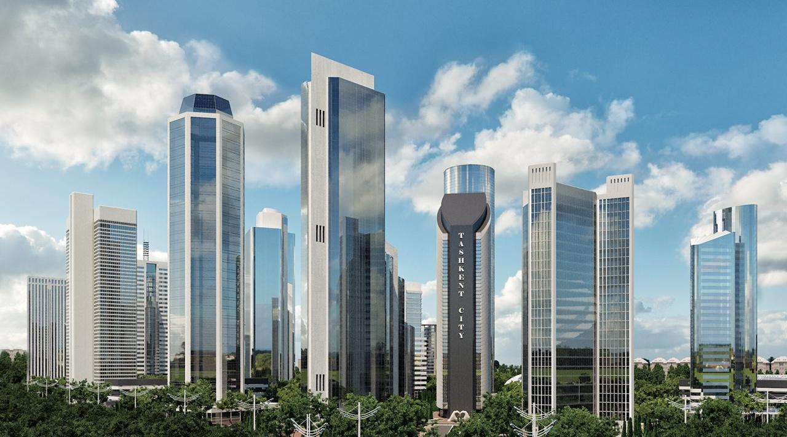

Touristic Cities
-
I. Bukhara
Inner view of Bukhara’s ancient buildings.
Bukhara is estimated to be about 2300 years old. It was conquered by Alexander the Great and was also once ruled by the Kushan Empire. However, when the Samanids later came into power, they created a large feudal state, with Bukhara as its capital. It was part of what came to be called the Golden Road, the meeting point of the northern and southern branches of the Great Silk Road, and hence a great center for commerce, religion, and culture.
In Sanskrit, Bukhara means “Monastery,” and was revered the Medieval Muslim East as a stronghold of the faith. In the 10th century, Bukhara became a scientific and cultural center, home to famous poets like Rudaki and Dakiki, and Avicenna, the great scientist and physician.
By the mid 19th century, Russia and Britain were both trying to gain control of Central Asia: Russia from the north and Britain from India in the south. Isolated since the time of the Silk Routes, Central Asia had not seen Western visitors for hundreds of years. Although Russia gained control of much of the region by 1868, Bukhara managed to keep its Emir as the master of the city. Inside the high walls, a strong anti-westerner sentiment was always present, fanned by the Emir himself. In 1918 the Russian revolution spread to Uzbekistan, but Bukhara never really fell into the fold until the city was almost destroyed and thousands of people were massacred by the Red Army on September 6, 1920.
Although Soviet rule lasted until 1991, the city never lost its Eastern culture and atmosphere, or its independent spirit. With more than 140 architectural monuments dating back to the Middle Ages, Bukhara is today a “museum town” with lots of history to see.
-
II. Khiva
Khiva: Islamkhuja Tower
Khiva is located in the Khorezm oasis inside the great Karakum Desert. While the Khorezm khanate was famous in the 4th century B.C. the actual date of origin of Khiva is lost in the mists of time. Some archaeologists believe it was founded about the same time as the birth of Christ, and was named after the ancient well of Kvivak, said to have been discovered by Shem, the Son of Noah. The remains of that ancient well are in the old city, and you are likely to see many newlyweds who come here to drink for good luck.
In the 10th century, the region was home to great philosophers, including Abu Ali Bin Sina (Avicenna) and was the center of a major agricultural civilization, whose armies routed the Roman legions of Marcus Crassus. Its power derived from sitting astride the great caravan routes from east to west, and in the 16th century, it became the capital of the Khorezm state. That state thrived until being decimated by the Mongols.
Although Soviet rule lasted until 1991, the city never lost its Eastern culture and atmosphere, or its independent spirit. With more than 140 architectural monuments dating back to the Middle Ages, Bukhara is today a “museum town” with lots of history to see.
-
III. Samarkand
Samarkand’s iconic Registan Square
Samarkand was founded at the same time as Babylon, Memphis, Athens, and Rome – almost 2500 years ago. It has been called the “Pearl of the Muslim World,” “Eden of Ancient East,” and “Rome of the East.”Samarkand has been conquered many times – by Alexander the Great, Genghis Khan, and Tamerlane, for instance. Tamerlane made it his capital and named it the “Center of the Universe.” Here was a mix of those from Iran, India, Persia, and Mongolia, and being the central part of the Silk Road, was additionally influenced by China, the Middle East, and Europe. Samarkand saw its glory at the height of trade on the Silk Road, beginning in the 2nd century and lasting until the 16th century.
In May 1868, Samarkand fell to the Russian Empire, caught up in what is now known as The Great Game. Under Russian rule the city changed its face; buildings and walls were torn down and the city was turned into a Russian military fortress. After the Russian Revolution, Samarkand became capital of the Uzbek Soviet Socialist Republic.
Despite the destruction of the early Russian era and the Soviet “imports” of factories and concrete buildings, the city remains one of the most historical and beautiful in Central Asia. Today, the independant Uzbek Republic is working to bring back the glory and beauty of its ancient pearl.
-
IV. Tashkent
Tashkent: A new view of Tashkent
Tashkent, or at least the region around it, has been home to humans for over 3,000 years. There is no written record of a settlement, however until Arabs took control of the area in the 8th century A.D. and the city flourished with trade along the silk route.
The Arabs remained in control until the arrival of Ghengis Khan in the 13th century. By this time it had already become one of the largest and most influential cities in Central Asia. With the fall of Ghengis Khan, the city passed to the control of Tamerlain. By 1449, Tamerlain’s great empire fell into anarchy, and the city eventually came under the control of the Khanate of Kokhand.
By 1865, Russian forces controlled the city and made it the capital of Russian Turkistan. When the Central Soviet Government broke Turkistan up into several regions, Tashkent replaced Samarkand as the capital of the Uzbek SSR in 1930, and today it is the capital of an independent Uzbekistan.
The largest city in Central Asia, Tashkent boasts the region’s only subway system, and is a splendid mix of old and new. The city was partially destroyed in a 1966 earthquake, and efforts continue even today to rebuild the old section of the city. As it is the largest center for cotton production in Asia, amongst certain age groups, it is hard to find someone who didn’t travel to Tashkent as a Soviet youth to work in the cotton fields for a summer.
As the main transportation hub (both air and rail) for Central Asia, most travelers to the region will likely pass through Tashkent.